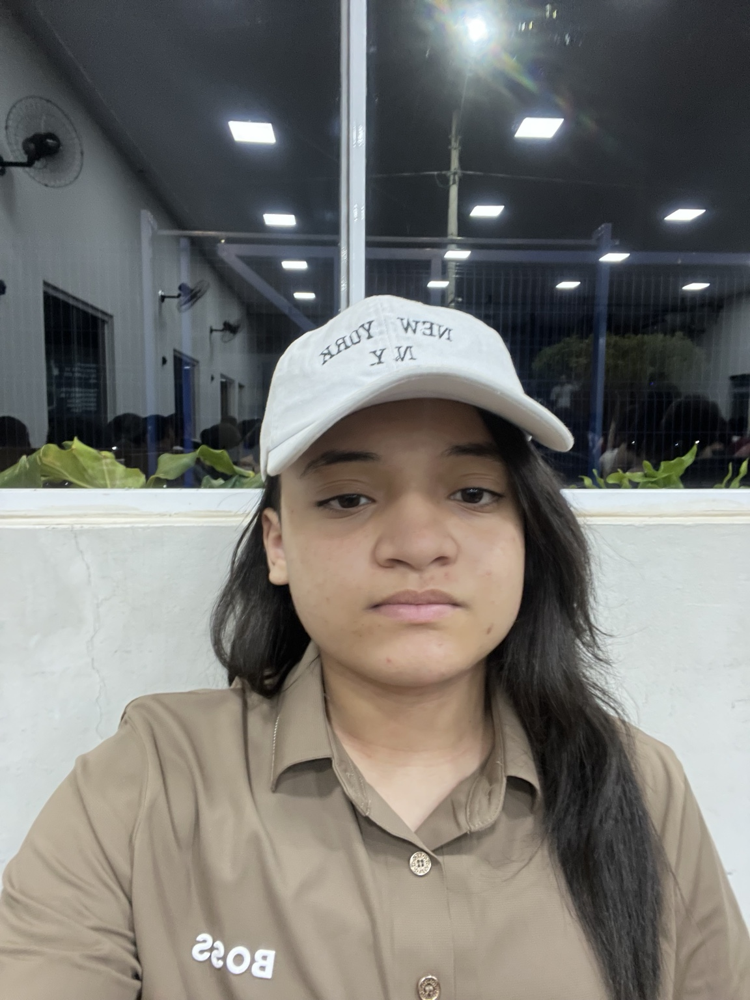

Em andamento
ENSINO MÉDIO
3ª série · Turma A
CETI Antônio Rodrigues Filho
Olá, eu sou
Estudante de Análise e Desenvolvimento de Sistemas
Em formação, com interesse em tecnologia, facilidade para aprender e vontade de transformar ideias em soluções.

01 / APRESENTAÇÃO
Estou construindo minha trajetória profissional com curiosidade, dedicação e disposição para aprender.
Sou estudante da 3ª série do Ensino Médio no CETI Antônio Rodrigues Filho, em Acauã–PI, e estou concluindo junto a ele a formação técnica em Análise e Desenvolvimento de Sistemas, com previsão de conclusão em 2026.
Ao longo da minha trajetória escolar, desenvolvi habilidades de comunicação, organização e liderança. Também tive a oportunidade de atuar como presidente do Grêmio Estudantil e como monitora escolar.
Busco minha primeira oportunidade profissional, na qual eu possa contribuir com responsabilidade, aprender com a equipe e ampliar meus conhecimentos.
02 / TRAJETÓRIA ACADÊMICA
Uma base que une ensino médio e preparação técnica para o mundo da tecnologia.
ENSINO MÉDIO
CETI Antônio Rodrigues Filho
FORMAÇÃO TÉCNICA
CETI Antônio Rodrigues Filho
As duas formações estão em fase de conclusão e serão atualizadas após a emissão dos documentos finais.
03 / EXPERIÊNCIA E PARTICIPAÇÃO
Experiências que fortaleceram minha responsabilidade, iniciativa e capacidade de trabalhar com pessoas.
CETI Antônio Rodrigues Filho
Selecionada em abril de 2026 para atuar como monitora durante o ano letivo, colaborando com as atividades e a rotina do ambiente escolar.
CETI Antônio Rodrigues Filho
Atuação na representação dos estudantes, organização de iniciativas e participação na comunidade escolar, desenvolvendo liderança, diálogo e trabalho em equipe.
Estou em busca da minha primeira experiência profissional formal e tenho disposição para aprender, receber orientações e assumir novos desafios.
04 / TECNOLOGIA NA PRÁTICA
Plataforma digital criada para apoiar a organização da rotina acadêmica dos estudantes. O projeto reúne recursos como tarefas, provas, calendário, acompanhamento dos estudos e organização de conteúdos por disciplina.
05 / O QUE POSSO OFERECER
Conhecimentos introdutórios e em desenvolvimento.
06 / FORMAÇÃO COMPLEMENTAR
Cursos livres concluídos com aproveitamento de 100%, conforme os certificados apresentados.
Cartas recebidas do Grupo Educacional Realiza Brasil.
07 / CONTATO
Estou disponível para oportunidades de primeiro emprego e pronta para aprender, colaborar e crescer profissionalmente.